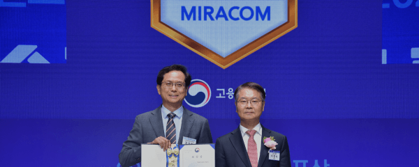
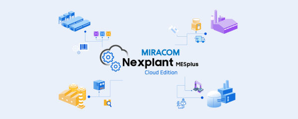
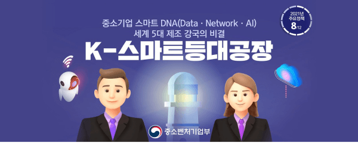
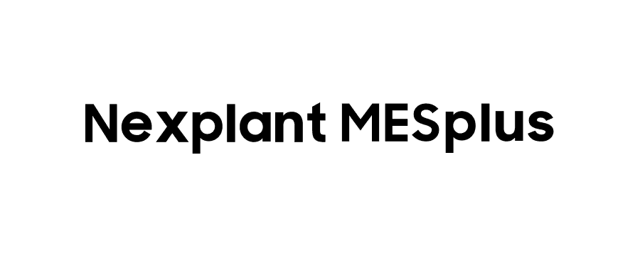
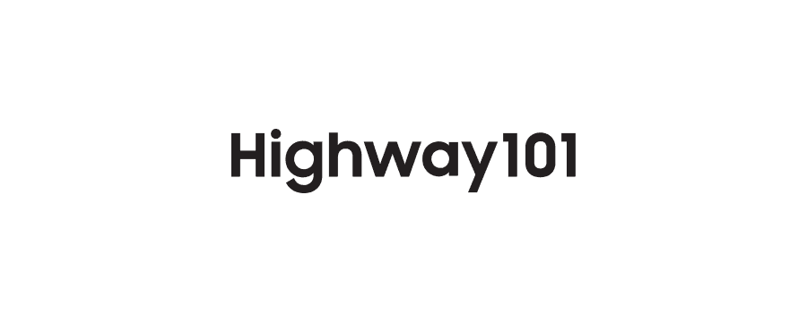
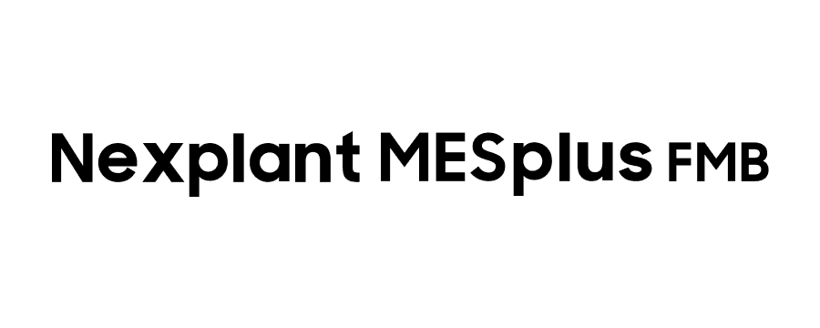
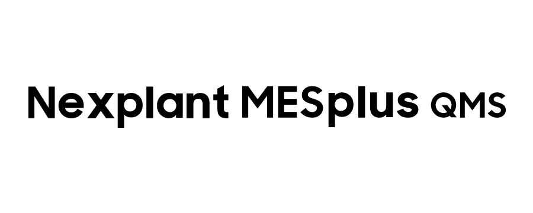
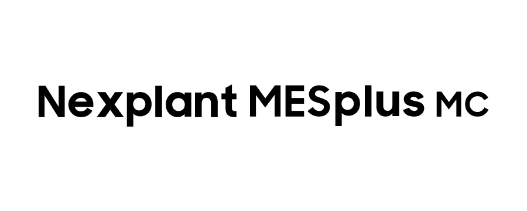
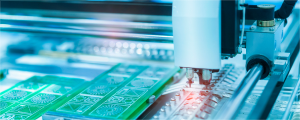

-
2023
- 남녀고용평등 적극적 고용개선조치(AA) 분야 고용노동부 장관표창
- 
-
2022
- 플랫폼 기반 클라우드형 MES솔루션 "Nexplant MESplus Cloud Edition" 출시
- 
- 2차전지, 태양광 업종 스마트팩토리 사업 확대
-
2021
- 스마트팩토리, ERP 원격운영서비스 개시
- K-등대공장 사업자 선정(태양광 에너지 대표기업)
- 
-
2020
- RPA(업무자동화)사업 진출(Brity RPA 기반)
- 식음료 업종 선두업체 스마트팩토리 성공적 구축 완료
- 화학 업종 스마트팩토리 사업 확대
회사소개
연혁
미라콤아이앤씨에는 항상 부지런한 발걸음이 있습니다.
고객의 성공을 만들어가는
미라콤아이앤씨가 되겠습니다.
고객의 성공을
만들어가는 미라콤아이앤씨가
되겠습니다.
만들어가는 미라콤아이앤씨가
되겠습니다.
-
2019
- Gartner Magic Quadrant for MES(2019) 전자/반도체 부문에 소개
- 플랫폼 기반 "Nexplant MESplus" 출시
- 
- CI 리뉴얼
-
2018
- 건설, 에너지 업종 고객 대상 시스템 구축 성공적 완료
- 2018 인더스트리 어워드 코리아
- 생산제조 솔루션 부문 기술혁신 대상 - 제약, 바이오 업종 스마트팩토리 사업 확대
-
2017
- 중대형 제조기업 대상 ERP/SI사업 본격화
- 시스템 진단/설계/구축/운영 원스톱 서비스
-
2016
- S/4HANA 전환사업 성공적 완료
- 중소기업 생산관리솔루션 "Nexplant MESalpha (Cloud)" 출시
- 식음료 업종 스마트팩토리 사업 확대
-
2015
- IoT 미들웨어 솔루션 "Highway101 IoT Middleware" 출시
- 
- 금융권 최초의 ERP 도입 사업 참여(보험ERP)
-
2014
- Frost & Sullivan MES Market(2014) 보고서,
"Global Key MES Player"로 선정 
-
2012
- 엔터프라이즈 제조 인텔리전스 솔루션 "Nexplant EMI" 출시
-
2011
- 삼성그룹 제조, 서비스 관계사 ERP 고도화 사업 참여(S-ERP)
-
2010
- 대한민국 IT Innovation 대상 수상 - 대통령상
- 정보모니터링 솔루션 "Nexplant FMB" 출시
- 
-
2008
- IT 서비스 사업 확대(삼성 관계사 - 금융, 서비스 분야)
- 태양광, 에너지 업종 스마트팩토리 사업 확대
-
2007
- 삼성 전자 글로벌 전사적자원관리 사업 참여(G-ERP)
- 대한민국 반도체기술대상 핵심기술상 수상
- 정보통신부 장관상
-
2006
- IT 서비스 사업 진출(삼성 관계사 - 전자, 제조 분야)
- "Highway101", GS인증 획득
- "Nexplant MESplus", 신소프트웨어대상 수상
- 정보통신산업진흥원 - "Nexplant MESplus", GS인증 획득
- 제조품질관리 솔루션 "Nexplant QMS" 출시
- 
-
2005
- 대한민국 소프트웨어사업자 대상 수상
- 정보통신부 장관상 - 일반제조, 자동차부품 업종 스마트팩토리 사업 확대

-
2002
- "Highway101", 대한민국 소프트웨어 대상 수상
- 대통령상 - 생산장비 자동화 솔루션 "Nexplant MC" 출시
- 
-
2001
- ISO 9001 인증 획득
- 기업부설연구소 인가
- 어플리케이션통합솔루션 "Highway101 Integration Suite" 출시
- 통합생산관리솔루션 "Nexplant MESplus" 출시
- 하이테크, 전기전자 업종 MES 솔루션 공급 확대
- 
-
1998
- 회사설립 (1998.12月)